export PATH="$PATH:/home/ubuntu/Share/software/discoal"
export PATH="$PATH:/home/ubuntu/Share/software/msdir"
export PATH="$PATH:/home/ubuntu/Share/software/"
export PATH="$PATH:/home/ubuntu/Share/software/htslib-1.21"Physalia Course, Day 4: Workshop on Genome-Wide Scans of Selection and Association
Genome-wide scan for selection: urban and non-urban lizards
This first exercise deals with a recent analysis YB carried on green anole lizards from New Orleans, Louisiana, USA. You can find more information about this urban population in this paper (weber2021?).
There are three different populations in this dataset. A few samples (N=5), listed in the file named “GA.list”, come from the same genetic cluster as the others, but are not from Louisiana. They are used as an outgroup. The two other files (countryside.list and subset_urban.list) list urban anoles samples within a park in New Orleans, as well as individuals sampled in the countryside near New Orleans.
To make things easier and faster, you only have access to a subset of the original dataset to a single 5Mb region on chromosome 4. Your task here will consist in extracting information from low-depth data, and obtain summary statistics to identify a possible candidate region for a selective sweep. Disclaimer: there is no clear-cut conclusion about whether this is an adaptation to the urban environment, but it seems interesting enough.
Setting up the session
We will need these programs:
You can also create your different working folders and link to the data:
mkdir Data_anolis
cd Data_anolis #to access the Data folder.
ln -s /home/ubuntu/Share/Day4_selection/Data_anolis/* .
cd ..
mkdir Daphnia_data
cd Daphnia_data #to access the Data folder.
ln -s /home/ubuntu/Share/Day4_selection/Daphnia_data/* .
cd ..
mkdir DP_Data
cd DP_Data #to access the Data folder.
ln -s /home/ubuntu/Share/Day4_selection/DP_Data/* .
cd ..Examining depth of coverage per individual and missing data
First, let’s have a look at our data. A very convenient way to look at the sequencing effort and mapping rate is to use samtools flagstat. Another one that may come handy is bedtools (https://bedtools.readthedocs.io/en/latest/index.html). The latter will absolutely have to be part of your toolbox!
The first command is from the Shell terminal (bash):
mkdir Results_anolis
conda activate Workshop_TL_YB_Calling
for BAM in *bam ; do echo $BAM; samtools flagstat $BAM ; doneIt would not be advisable to do this on a complete dataset though. The files you have here are rather small. You could however use a cluster and run separate jobs in parallel to recover these summary statistics for each sample.
We can also use ANGSD (see below) to estimate the distribution of sequencing depth (i.e. how many bases are covered by one, two, three… reads) for our samples. Make sure you are in the Data/ folder.
Bash command:
for POP in GA.list countryside.list subset_urban.list
do
angsd -bam ${POP} -doDepth 1 -out ../Results_anolis/depth_${POP} -doCounts 1
done
cd ..
conda deactivateNow, we want to visualize our results. We will use R for this. The R scripts are show below:
library(reticulate) #This is if you want to use Quarto on your own machine and call the version of Python that has dadi installed.
use_python("/home/yannbourgeois/mambaforge/bin/python")
# Load necessary libraries
library(ggplot2)
library(reshape2)
for (file in c("GA","countryside","subset_urban")){
if (file=="GA"){
depth=read.table(paste("Results_anolis/depth_",file,".list.depthSample",sep=""))
names=read.table(paste("Data_anolis/",file,".list",sep=""))
depth=t(depth)
colnames(depth)=names$V1
depth=as.data.frame(depth)
}
else
{
depth2=read.table(paste("Results_anolis/depth_",file,".list.depthSample",sep=""))
names2=read.table(paste("Data_anolis/",file,".list",sep=""))
depth2=t(depth2)
colnames(depth2)=names2$V1
depth2=as.data.frame(depth2)
depth=cbind(depth,depth2)
}
}
depth$depth=seq(0,100)
# Reshape the dataframe
df_long <- melt(depth[,c(1:41,42)], id.vars = "depth", variable.name = "Individual", value.name = "Observations")
df_long$Population=c(rep("outgroup",5*101),rep("non-urban",18*101),rep("urban",18*101))
###Quick hack here: we have 5 outgroup samples, 18 non-urban, and 18 urban. For each of them there are 101 values for depth, from 0X to 100X (100X actually includes equal or above 100X)
# pdf(file = "Results_anolis/Depth.pdf")
# Plot the sequencing depth for each individual and colour by population.
ggplot(df_long, aes(x = depth, y = Observations, color = Population)) +
geom_point() + # Points on the line
labs(title = "Sequencing Depth for Each Individual",
x = "Depth (X)",
y = "Number of Observations") + xlim(0,25) +
theme_minimal()Warning: Removed 3075 rows containing missing values or values outside the scale range
(`geom_point()`).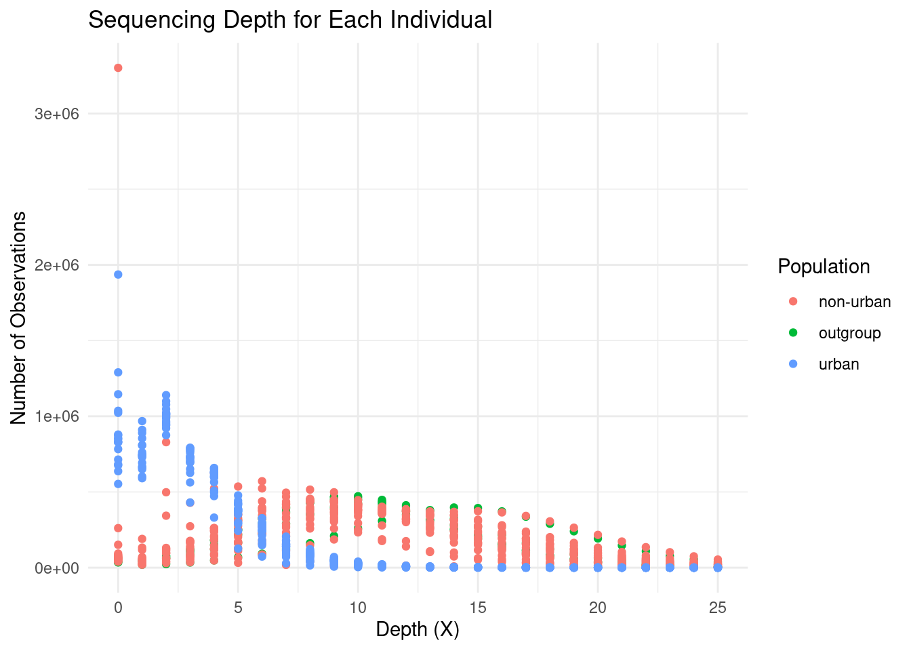
# dev.off()What do you notice about urban samples?
Using ANGSD to extract genotype likelihoods and allele frequencies.
ANGSD (Korneliussen, Albrechtsen, and Nielsen 2014) (which I pronounce like in ‘Existential Angst’) is a software that aims at alleviating the issue of low depth when genotyping SNPs. This will come handy in our case. Despite the decreasing costs of sequencing, a full resequencing experiment may remain prohibitive.
The idea here is that we will use the relative probabilities for each sample to be homozygous or heterozygous at any given site, instead of called genotypes (0/0, 0/1, 1/1), to estimate summary statistics such as nucleotide diversity and differentiation. Let’s use ANGSD again, but this time to produce the input files we need. This command may take a few minutes. If it is running too slow (we are many people on the server), you can start the next step from the Results_expected folder that should be on Github.
###All files in /shared/projects/popgen_reunion_harrier/subset_workshop_Physalia
conda activate Workshop_TL_YB_Calling
cd Data_anolis
for POP in GA.list countryside.list subset_urban.list
do
if [ "${POP}" = "GA.list" ]
then
maxDepth=25;
index="outgroup";
elif [ "${POP}" = "countryside.list" ];
then
maxDepth=20;
index="country";
elif [ "${POP}" = "subset_urban.list" ];
then
maxDepth=10;
index="urban";
else
maxDepth=0 # Default value if no conditions are met
fi
temp=`wc -l ${POP} | cut -f 1 -d " "`
NIND=$((2*${temp}/3)) ###at least 66% individuals sequenced
angsd -doCounts 1 -doSaf 1 -doSnpStat 1 -doHWE 1 -GL 1 -nThreads 10 -ref anoCar2.fa -anc anoCar2.fa -doMaf 1 -doMajorMinor 1 -minInd ${NIND} -out ../Results_anolis/chr4_region_${index} -uniqueOnly 1 -remove_bads 1 -only_proper_pairs 1 -trim 0 -C 50 -baq 1 -minMapQ 20 -minQ 30 -setMaxDepth $(($temp*$maxDepth)) -bam ${POP}
done
cd ..Admittedly, it looks barbaric. It is called ANGSD for a reason. You can take comfort in knowing that most of the filters are fine for most applications. Nevertheless, let’s review the different options:
| Option | Meaning |
|---|---|
| -uniqueOnly | removes reads with multiple hits. |
| -remove_bads | removes reads with a flag above 255 (not primary, failure and duplicate reads). |
| -only_proper_pairs | Only paired reads mapping in the expected direction (forward R1, reverse R2) and not too distant are kept. |
| -trim | The number of bases to trim from each read (useful for ancient DNA reads which are often low quality at the beginning and the end). |
| -C | Adjusts mapping quality if too many mismatches |
| -baq | Implements Base-alignment quality: corrects base quality around indels. |
| -minMapQ | Minimum mapping quality (Phred score). |
| -minQ | Minimum base quality (Phred score). |
| -setMaxDepth | Maximum number of (filtered) reads above which a site is excluded. |
| -bam | A list of BAM files (text format). |
| -doCounts | An option to output a file with the number of times an allele is sequenced (to output depth). |
| -doSaf | An option to output a saf file, which will be used to infer the site frequency spectrum |
| -doSnpStat | A flag to report statistics about sites (such as allele frequency). |
| -doHWE | Hardy-Weinberg test. |
| -GL | The genotype likelihood model to be used. Nowadays there is little difference between them, but you can better compare results between ANGSD and GATK/Samtools for example. 1: samtools/bcftools model. 2: GATK model. |
| -nThreads | The number of threads used for parallelization. A higher number should improve speed up to a point. |
| -ref | The reference genome. |
| -anc | The ancestral genome. Useful to polarize alleles into ancestral and derived. To create one, you can use a VCF for an outgroup population/species aligned on the reference genome and create a consensus. |
| -doMaf | Outputs the estimate for minor allele frequency |
| -doMajorMinor | Can take values 1 to 5. Determines whether the major allele is fixed or inferred (more information here: https://www.popgen.dk/angsd/index.php/Major_Minor ). |
| -minInd | The minimal number of individuals for a site to be kept. |
Using realSFS to extract the allele frequency spectra and summary statistics.
Now we estimate 1D AFS summary statistics.
for index in outgroup country urban;
do
realSFS Results_anolis/chr4_region_${index}.saf.idx -P 4 > Results_anolis/chr4_region_${index}.ml;
realSFS saf2theta Results_anolis/chr4_region_${index}.saf.idx -sfs Results_anolis/chr4_region_${index}.ml -outname Results_anolis/chr4_region_${index}
thetaStat do_stat Results_anolis/chr4_region_${index}.thetas.idx -win 50000 -step 10000 -outnames Results_anolis/chr4_region_${index}_50kb.thetas
thetaStat do_stat Results_anolis/chr4_region_${index}.thetas.idx -win 5000 -step 1000 -outnames Results_anolis/chr4_region_${index}_5kb.thetas
doneWe are mostly interested in testing whether there is a signal of positive selection in the urban individuals. What should we do here?
We can estimate FST, as well as PBS, the Population Branch Statistic, which is calculated for each of the three populations. Elevated values suggest higher differentiation in this population compared to the two others.
The first three realSFS commands to obtain the spectrum is a bit slow here. You can skip it and directly start from the output files in the Results_expected folder in Github.
INDEX0=chr4_region_outgroup
INDEX1=chr4_region_country
INDEX2=chr4_region_urban
realSFS Results_anolis/${INDEX0}.saf.idx Results_anolis/${INDEX1}.saf.idx -P 8 > Results_anolis/${INDEX0}_${INDEX2}.ml # slow, if needed, just start from
realSFS Results_anolis/${INDEX0}.saf.idx Results_anolis/${INDEX2}.saf.idx -P 8 > Results_anolis/${INDEX0}_${INDEX1}.ml
realSFS Results_anolis/${INDEX1}.saf.idx Results_anolis/${INDEX2}.saf.idx -P 8 > Results_anolis/${INDEX1}_${INDEX2}.ml
realSFS fst index Results_anolis/${INDEX0}.saf.idx Results_anolis/${INDEX1}.saf.idx Results_anolis/${INDEX2}.saf.idx -sfs Results_anolis/${INDEX0}_${INDEX2}.ml -sfs Results_anolis/${INDEX0}_${INDEX1}.ml -sfs Results_anolis/${INDEX1}_${INDEX2}.ml -fstout Results_anolis/FST -whichFst 1
realSFS fst stats2 Results_anolis/FST.fst.idx -win 50000 -step 10000 -type 0 > Results_anolis/FST_50kb.fst2
realSFS fst stats2 Results_anolis/FST.fst.idx -win 5000 -step 1000 -type 0 > Results_anolis/FST_5kb.fst2
conda deactivateThe -whichFst option tells the program to compute Bhatia’s FST estimator (Bhatia et al. 2013), which better handles rare variants. It is also the statistic that we are going to use in simulations.
When there are not too many regions to inspect, I usually like to look at the SFS inferred by realSFS. First we slightly edit the spectrum file to turn it into the right format:
INDEX0=chr4_region_outgroup
INDEX1=chr4_region_country
INDEX2=chr4_region_urban
echo "37 37 unfolded" | cat - Results_anolis/${INDEX1}_${INDEX2}.ml > Results_anolis/${INDEX1}_${INDEX2}_dadi.sfs
###Activate the environment for dadi
conda activate Workshop_TL_YB_admixtureWe are going to use some functions in the popular module dadi (Gutenkunst et al. 2009). It includes functions to visualize and manipulate spectra which may come handy for you too. To run the correct version of python, type python3.7 in the Workshop_TL_YB_admixture environment.
import dadi
import glob
import os
import matplotlib.pyplot as plt
# Directory containing the files
file_path = 'Results_anolis/chr4_region_country_chr4_region_urban_dadi.sfs'
fs = dadi.Spectrum.from_file(file_path) ###ml file but with a dadi header
fs2=fs.fold() ###A useful function when you are not sure about ancestral or derived alleles; you can fold the spectrum so it only represents the frequency of the minor allele instead of the derived allele.
fs3=fs.project([24,24]) ###Projecting down the spectrum to 24 alleles each.
fs2.to_file("Results_anolis/folded_spectrum.sfs")
dadi.Plotting.plot_single_2d_sfs(fs,vmin=1)<matplotlib.colorbar.Colorbar object at 0x75c3b9c06d40>plt.show()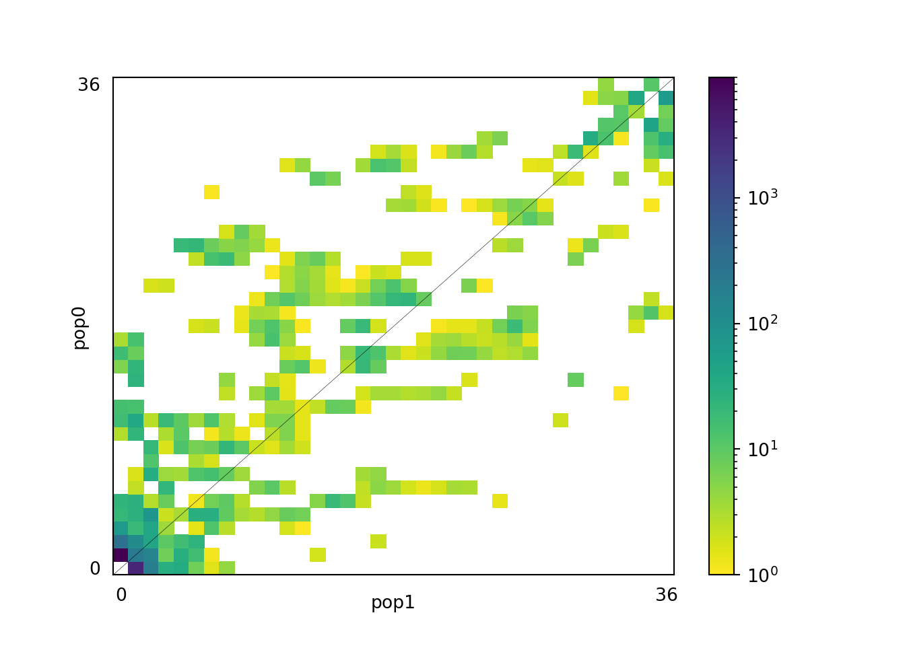
plt.savefig("Results_anolis/AFS_urban_country.jpg") #save as jpg
A few questions and remarks
Based on the spectrum, do you think that there is a signal of a recently completed hard selective sweep in the urban population?
Bonus question: How would you deal with an entire genome, and not only 5Mb? Do not hesitate to ask us.
Note that winsfs is an alternative which is much faster: https://github.com/malthesr/winsfs
If you have some time, don’t hesitate to try it. It can deal with entire genomes at once efficiently.
Now, let’s have a look at the FST distribution and diversity in our region of interest:
region=read.table("Results_anolis/FST_50kb.fst2",h=T)
region2=read.table("Results_anolis/chr4_region_urban_50kb.thetas.pestPG",h=F)
region3=read.table("Results_anolis/chr4_region_country_50kb.thetas.pestPG",h=F)
colnames(region2)=c("index","chr","WinCenter", "tW", "tP" ,"tF", "tH", "tL", "Tajima", "fuf", "fud", "fayh", "zeng", "nSites")
colnames(region3)=c("index","chr","WinCenter", "tW", "tP" ,"tF", "tH", "tL", "Tajima", "fuf", "fud", "fayh", "zeng", "nSites")
region$col=ifelse(region$Fst12 > 0.199,"darkorange","black")
# pdf(file="Figure_stats_anolis.pdf")
par(mfrow=c(3,1))
plot(region$midPos,region$Fst12, xlim=c(122495000-1e6,122655000+1e6), ylim=c(0,0.4), type="s", xlab="Position", ylab="Fst", main="Candidate on chr4", col=region$col, lwd=2)
points(region$midPos,region$Fst12, col=region$col, pch=3)
plot(region2$WinCenter, region2$tP/region2$nSites, xlim=c(122495000-1e6,122655000+1e6), ylim=c(0,0.002), col="red", type="l", xlab="Position", ylab="nucleotide diversity", lwd=2)
points(region3$WinCenter,region3$tP/region3$nSites, xlim=c(122495000-1e6,122655000+1e6),type="l", lty=2, lwd=2)
plot(region2$WinCenter, region2$Tajima, xlim=c(122495000-1e6,122655000+1e6), col="red", type="l", xlab="Position", ylab="Tajima's D", lwd=2)
points(region3$WinCenter, region3$Tajima, xlim=c(122495000-1e6,122655000+1e6), type="l", lty=2, lwd=2)
# dev.off()If you prefer ggplot2, here is an option. Make sure to deactivate your conda environments before if you are running this on the cluster (the libraries are not installed there).
library(ggplot2)
library(gridExtra)
region=read.table("Results_anolis/FST_50kb.fst2",h=T)
region2=read.table("Results_anolis/chr4_region_urban_50kb.thetas.pestPG",h=F)
region3=read.table("Results_anolis/chr4_region_country_50kb.thetas.pestPG",h=F)
colnames(region2)=c("index","chr","WinCenter", "tW", "tP" ,"tF", "tH", "tL", "Tajima", "fuf", "fud", "fayh", "zeng", "nSites")
colnames(region3)=c("index","chr","WinCenter", "tW", "tP" ,"tF", "tH", "tL", "Tajima", "fuf", "fud", "fayh", "zeng", "nSites")
region$col=ifelse(region$Fst12 > 0.199,"darkorange","black")
# Fst plot
pbs_plot <- ggplot(region, aes(x = midPos, y = PBS2)) +
geom_line(lwd = 1.2) +
geom_point(aes(color = col,shape=col,size=col), size=2) +
scale_fill_manual(values = c("black", "darkorange")) +
facet_wrap(~ chr, scales = "free_x") +
labs(title = "", x = "Position", y = "PBS") +
theme_minimal()+theme(legend.position = "none")+ theme(axis.text.y=element_blank()) ###I remove the y axis to align all graphs correctly
fst_plot <- ggplot(region, aes(x = midPos, y = Fst12)) +
geom_line(lwd = 1.2) +
geom_point(aes(color = col,shape=col,size=col), size=2) +
scale_fill_manual(values = c("black", "darkorange")) +
facet_wrap(~ chr, scales = "free_x") +
labs(title = "", x = "Position", y = "Fst") +
theme_minimal()+theme(legend.position = "none")+ theme(axis.text.y=element_blank()) ###I remove the y axis to align all graphs correctly
# Nucleotide diversity plot
nuc_div_plot <- ggplot() +
geom_line(data = region2, aes(x = WinCenter, y = tP/nSites), color = "red", lwd = 1.2) +
geom_line(data = region3, aes(x = WinCenter, y = tP/nSites), linetype = "dashed", lwd = 1.2) +
facet_wrap(~ chr, scales = "free_x") +
labs(x = "Position", y = "Nucleotide Diversity") +
theme_minimal() + theme(axis.text.y=element_blank())
# Tajima's D plot
tajima_plot <- ggplot() +
geom_line(data = region2, aes(x = WinCenter, y = Tajima), color = "red", lwd = 1.2) +
geom_line(data = region3, aes(x = WinCenter, y = Tajima), linetype = "dashed", lwd = 1.2) +
facet_wrap(~ chr, scales = "free_x") +
labs(x = "Position", y = "Tajima's D") +
theme_minimal() + theme(axis.text.y=element_blank())
# Arrange all plots
# grid.arrange(pbs_plot,fst_plot, nuc_div_plot, tajima_plot, ncol = 1, nrow = 4)
pbs_plot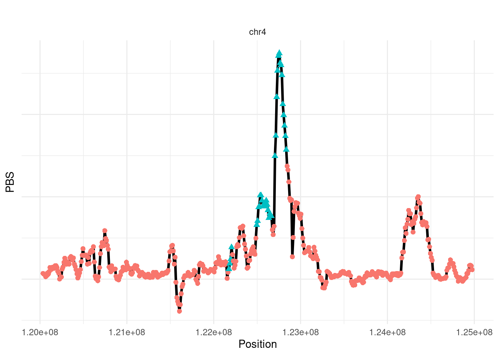
fst_plot 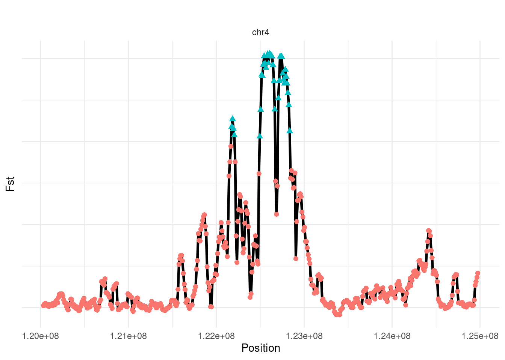
nuc_div_plot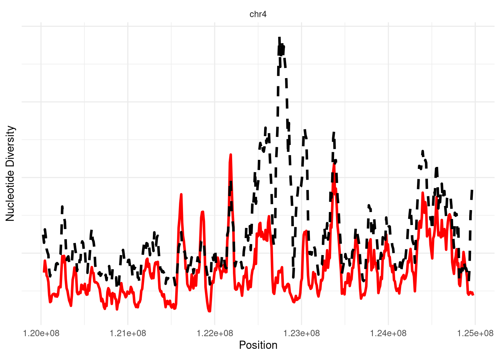
tajima_plot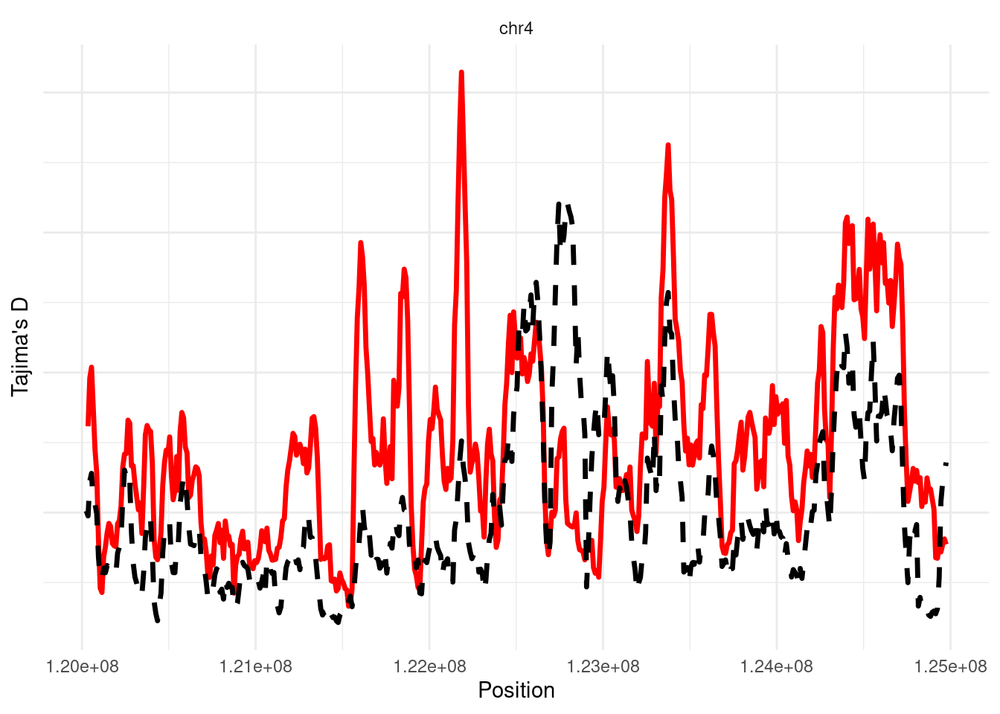
At last, it may well be that you wish to visualize genes next to our summary statistics.
More advanced: using simulations to decide on thresholds.
First, the script below to obtain the scaled parameters for the ms simulator. We are going to use a “simple” demographic model of isolation-with-migration for our two urban and non-urban population. We will use this model to generate simulations, estimate summary statistics, and decide
Let’s be honest, the coalescent simulator ms (Hudson 2002) is not the most intuitive, but it is extremely fast, versatile, and is now part of the standard toolbox for population geneticists. You will find the manual in the Documentation folder for this workshop, but here are some pointers already.
| ms Option | Meaning |
|---|---|
| -t | Set value of 4 x N0 x u. N0 is the reference population. If you have several populations, you need to pick one and scale everything with it. |
| -I npop size0 size1… | Followed by the number of populations, and the (haploid) sample size for each. |
| -m i j Mij | Sets the effective migration rate 4 x N0 x mij . This is not intuitive at first: mij reflects the fraction of population i that is made of j migrants each generation. Therefore it reflects migration from j towards i. |
| -ej t i j | At time t, population i moves into population j, backward in time. This means, forward in time, that j gives an offshoot population i at time t in the past. |
| -en t i x | At time t, the size of population i changes by a factor x, backward in time. This means that you would code a population expansion forward in time with x < 1. |
| -es t i p | Simulates an admixture event. Split subpopulation i into subpopulation i and a new subpopulation, labeled npop + 1. Each ancestral lineage in subpopulation i is randomly assigned to subpopulation i with probability p and subpopulation npop + 1 with probability 1 − p. The size of subpopulation npop + 1 is set to N0. You typically need to reconnect the new subpopulation npop + 1 to an existing one (using -ej). |
I provide below a R script that explains a bit how to obtain the correct values for an isolation-with-migration model. The values used here were obtained through inference using fastsimcoal2.6 (Excoffier et al. 2013).
mut <- 1.7e-9 # mutation rate per base per generation in anoles
No <- 155/2 # present diploid effective size for the urban population (pop 1)
ms <- paste("88", # total number of sampled chromosomes should be 72 (2 x 18 x 2 populations)
"1", # number of simulation replicates -- 1 here. Replicates are appended to the same file otherwise.
"-t",4*No*mut*50000, # population mutation rate $\theta$ = 4*No*mu
"-I 2 64 24", # population structure
"-m 1 2",(4*No*1.7e-04), "-m 2 1", (4*No*0.0563967),
"-en 0 2",(19663/2)/No, # population size rescaling for pop 2 (country)
"-ej",32/(4*No),"1 2", #split
"-en",32/(4*No),2,(635816/2)/No, #GA ancestral pop size before split
"-en",50784/(4*No),2,(61542/2)/No,
"-en",106177/(4*No),2,(207976/2)/No)
ms
####Rough estimate if background selection: N0 reduced by 10 times, but times kept the same (so increase them by 10). Absolute migration rates stay the same (so effectively less gene flow)
ms_background <- paste("88", # total number of sampled chromosomes
"1", # number of simulation replicates -- MUST BE "1"
"-t",0.1*4*No*mut*50000, # population mutation rate $\theta$ = 4*No*mu
"-I 2 64 24", # population structure
"-m 1 2",(4*0.1*No*1.7e-04) , "-m 2 1", (4*0.1*No*0.0563967),
"-en 0 2",(19663/2)/No, # population size rescaling for pop 2 (urban)
"-ej",32/(4*0.1*No),"1 2", #split
"-en",32/(4*0.1*No),2,(635816/2)/No, #GA ancestral pop size before split
"-en",50784/(4*0.1*No),2,(61542/2)/No,
"-en",106177/(4*0.1*No),2,(207976/2)/No)
ms_backgroundYou can copy and paste the output of ms and ms_background to obtain neutral simulations and approximations of strong background selection.
Now, let’s obtain simulated values for FST under neutrality and selection. For positive selection, we will use the discoal (Kern and Schrider 2016) coalescent simulator, which provides many options to simulate selective sweeps.
There are several scripts here that you may find under software/ in the Shared/ folder. These scripts include two custom python scripts (script_python_Fst.py and script_python_Fst_selection.py), as well as an utility ms2vcf which converts ms output to a VCF file. The python scripts are very crude, and I am sure you can make better ones. They mostly use the scikit allel Python module (https://scikit-allel.readthedocs.io/en/stable/#) to estimate Bhatia’s FST from the VCF file. Have a look at the scripts and do not hesitate to adapt them to your own needs. And of course, do not hesitate to ask if you find the Python code gibberish.
conda activate Workshop_TL_YB_Misc
mkdir Simulations_folder
cd Simulations_folder
rm -f Fst_Bhatia_distribution_neutral_50kb.txt ##just to clean everything before restarting, in case.
for i in {1..100}
do
ms 88 1 -t 0.02635 -I 2 64 24 -m 1 2 0.0527 -m 2 1 17.482977 -en 0 2 126.858064516129 -ej 0.103225806451613 1 2 -en 0.103225806451613 2 4102.03870967742 -en 163.81935483871 2 397.045161290323 -en 342.506451612903 2 1341.78064516129 | ms2vcf -length 50000 > simulation_neutral.vcf
script_python_Fst.py >> Fst_Bhatia_distribution_neutral_50kb.txt
done
####Rough estimate if background selection: N0 reduced by 10 times, but times kept the same (so values increased by 10 here). Absolute migration rates stay the same (so less effective gene flow Nxm). Ask YB if you need more details.
rm -f Fst_Bhatia_distribution_background_50kb.txt
for i in {1..100}
do
ms 88 1 -t 0.002635 -I 2 64 24 -m 1 2 0.00527 -m 2 1 1.7482977 -en 0 2 126.858064516129 -ej 1.03225806451613 1 2 -en 1.03225806451613 2 4102.03870967742 -en 1638.1935483871 2 397.045161290323 -en 3425.06451612903 2 1341.78064516129 | ms2vcf -length 50000 > simulation_neutral.vcf
script_python_Fst.py >> Fst_Bhatia_distribution_background_50kb.txt
done
###discoal only in population #0 (0-indexed, and -ej becomes -ed in discoal), so need to specify urban as the reference. Ensures that sweep is fixed.
rm -f Fst_Bhatia_distribution_selection.txt
for i in {1..100}
do
discoal 88 1 50000 -t 0.02635 -r 0.02635 -p 2 64 24 -m 0 1 0.0527 -m 1 0 17.482977 -en 0 1 126.858064516129 -ed 0.103225806451613 0 1 \
-en 0.103225806451613 1 4102.03870967742 -en 163.81935483871 1 397.045161290323 -en 342.506451612903 1 1341.78064516129 \
-a 155 -ws 0 -x 0.5 | ms2vcf -length 50000 > simulation_sweep.vcf
script_python_Fst_selection.py >> Fst_Bhatia_distribution_selection.txt
done
cd ..
conda deactivateNow, let’s have a look at the obtained theoretical FST distributions using R.
table=read.table("Simulations_folder/Fst_Bhatia_distribution_neutral_50kb.txt",h=F)
sel=read.table("Simulations_folder/Fst_Bhatia_distribution_selection.txt")
back=read.table("Simulations_folder/Fst_Bhatia_distribution_background_50kb.txt",h=F)
#pdf(file="Expected_distrib.pdf")
plot(density(table$V1),type="l",col="darkgrey",lwd=2,lty=2,main="Expected distributions for Fst",xlab="Fst",xlim=c(0,0.8))
points(density(sel$V1),type="l",col="red",lwd=2)
points(density(back$V1),type="l",col="blue",lwd=2)
abline(v=0.2,lty=3,lwd=2,col="blue")
abline(v=0.35,lty=3,lwd=2,col="red")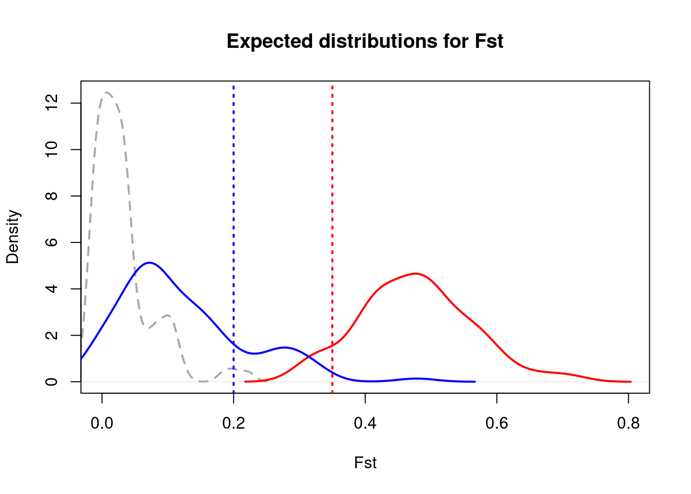
#dev.off()What would seem to be a reasonable threshold?
This is of course an introduction. If you start dealing with more complex datasets, you may be interested in approaches that do not rely on human-defined thresholds to decide whether your candidate region is a sweep or not.
An introduction to tests based on haplotype extension, using simulations.
We will use here rehh on simulated data to have a look at the impact of positive selection on haplotype length. We will use discoal as before to obtain simulations of a selective sweeps. We will also generate 10 independent neutral simulations that will serve as a contrast.
We will have to phase our VCF. We will use shapeit4(Delaneau et al. 2019), which is fast. BEAGLE (Browning and Browning 2007) is also an option. Note that shapeit4 uses statistical phasing. In an actual analysis with sequencing data, it may be good to combine statistical phasing with physical phasing, which uses the alignments in BAM files to identify linked alleles. This may reduce the error rate (so-called switch rate). A good option to perform physical phasing is WhatsHap: https://whatshap.readthedocs.io/en/latest/
We simulate a very strong sweep here and adjust the parameters to simulate a longer genomic region. We also simulate ten neutral windows, to provide a contrast for our analysis.
conda activate Workshop_TL_YB_shapeit
cd Simulations_folder
###4*1.75e-9*10000*5000000 = 350. We assume equal mutation and recombination rates.
discoal 200 1 50000 -t 350 -r 350 -p 2 100 100 -m 0 1 0.0001 -m 1 0 0.0001 -ed 0.1 0 1 \
-en 0.1 1 2 -a 1000 -ws 0 -x 1 | ms2vcf -length 5000000 > simulation_sweep.vcf
###Note that discoal only models selection in population 0.
###-ws is when the sweep ends (backward in time)
###-x is the final frequency of the sweep
rm simulation_sweep.vcf.gz
rm phased_simulation_sweep.vcf.gz
bgzip simulation_sweep.vcf
tabix -f -p vcf simulation_sweep.vcf.gz
shapeit4 --input simulation_sweep.vcf.gz --region 1 --output phased_simulation_sweep.vcf.gz
###Note that we can also use discoal for neutral simulations, see below.
for i in {1..10}
do
discoal 200 1 50000 -t 350 -r 350 -p 2 100 100 -m 0 1 0.0001 -m 1 0 0.0001 -ed 0.1 0 1 -en 0.1 1 2 | ms2vcf -length 5000000 -chrombase ${i} > simulation_neutral_chr_${i}.vcf
rm simulation_neutral_chr_${i}.vcf.gz
rm phased_simulation_neutral_chr_${i}.vcf.gz
bgzip simulation_neutral_chr_${i}.vcf
tabix -f -p vcf simulation_neutral_chr_${i}.vcf.gz
shapeit4 --input simulation_neutral_chr_${i}.vcf.gz --region ${i}1 --output phased_simulation_neutral_chr_${i}.vcf.gz
done
cd ..
conda deactivateNow in R, we can use the rehh package:
# install.packages("rehh")
# install.packages("gap")
library(rehh)
library(gap)
hh <- data2haplohh(hap_file = "Simulations_folder/phased_simulation_sweep.vcf.gz",
polarize_vcf = FALSE,vcf_reader = "data.table")
hh_urban = subset(hh, select.hap = 1:100, min_maf = 0)
hh_nonurban = subset(hh, select.hap = 101:200, min_maf = 0)
wgscan_urban <- scan_hh(hh_urban)
wgscan_nonurban <- scan_hh(hh_nonurban)
hh_chr1 <- data2haplohh(hap_file = "Simulations_folder/phased_simulation_sweep.vcf.gz",
polarize_vcf = FALSE,vcf_reader = "data.table")
hh_chr1_scan = scan_hh(hh_chr1) ###To keep things fast we only do this scan for all individuals on this candidate chromosome.
for(i in 1:10) {
# haplotype file name for each chromosome
hap_file = paste("Simulations_folder/phased_simulation_neutral_chr_", i, ".vcf.gz", sep = "")
# create internal representation
hh <- data2haplohh(hap_file = hap_file,
polarize_vcf = FALSE,
vcf_reader = "data.table") # perform scan on a single chromosome (calculate iHH values)
hh_urban = subset(hh, select.hap = 1:100, min_maf = 0)
hh_nonurban = subset(hh, select.hap = 101:200, min_maf = 0)
scan_urban <- scan_hh(hh_urban)
scan_nonurban <- scan_hh(hh_nonurban)
# concatenate chromosome-wise data frames to
# a data frame for the whole genome
# (more efficient ways certainly exist...)
wgscan_urban <- rbind(wgscan_urban, scan_urban)
wgscan_nonurban <- rbind(wgscan_nonurban, scan_nonurban)
}
# calculate genome-wide iHS values
wgscan_urban.ihs <- ihh2ihs(wgscan_urban)
wgscan_nonurban.ihs <- ihh2ihs(wgscan_nonurban)
rsb.urban_nonurban <- ines2rsb(scan_pop1 = wgscan_urban,
scan_pop2 = wgscan_nonurban,
popname1 = "urban",
popname2 = "non-urban",include_freq=T)
xp.urban_nonurban <- ies2xpehh(scan_pop1 = wgscan_urban,
scan_pop2 = wgscan_nonurban,
popname1 = "urban",
popname2 = "non-urban")
###How can we find the marker with the lowest p-value ? Note that they are already log-transformed...
candidate=subset(xp.urban_nonurban,xp.urban_nonurban$LOGPVALUE==max(xp.urban_nonurban$LOGPVALUE,na.rm=T))$POSITION
index_candidate=as.numeric(row.names(subset(hh_chr1_scan,hh_chr1_scan$POSITION==candidate)))
#pdf(file="test_scan_XP-EHH.pdf")
manhattanplot(xp.urban_nonurban,pval=T)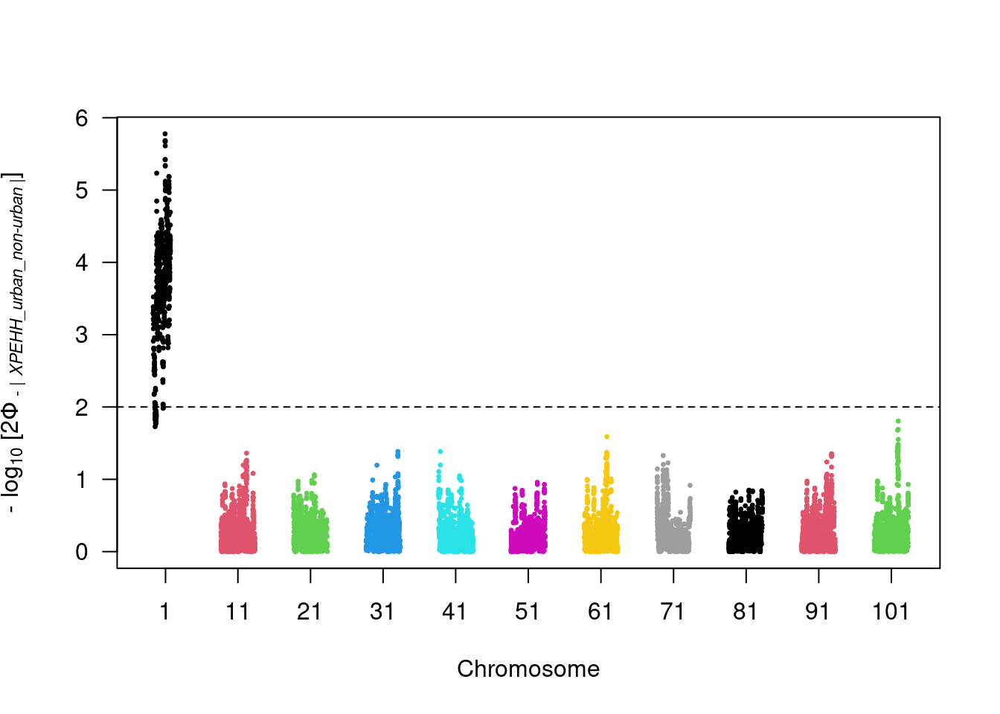
manhattanplot(rsb.urban_nonurban,pval=T)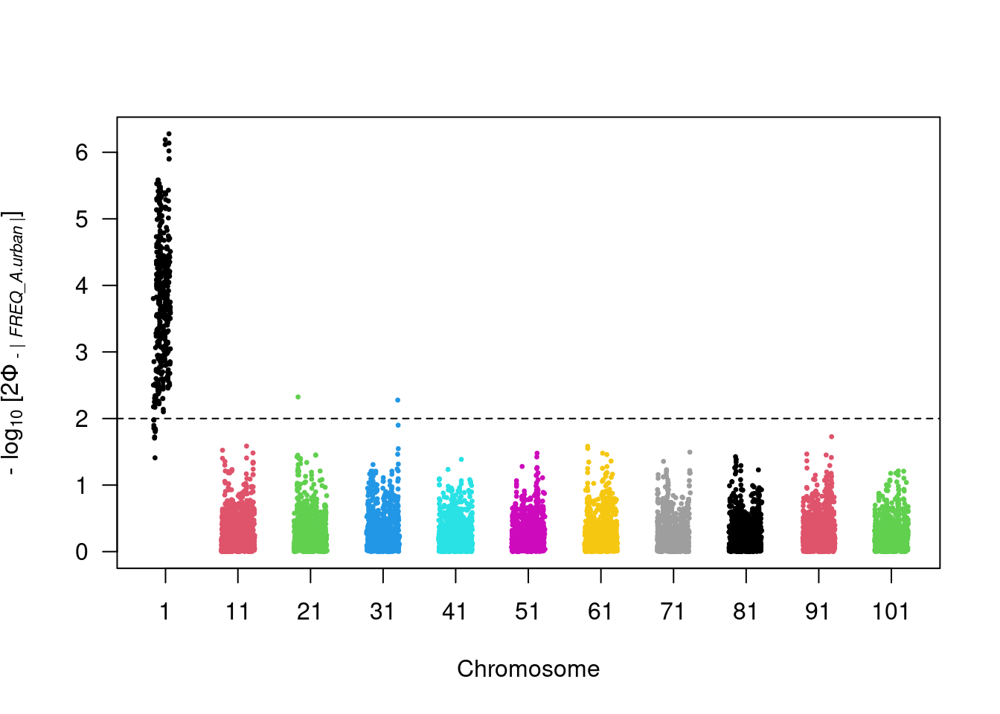
furcation <- calc_furcation(hh_chr1,mrk = index_candidate)
plot(furcation,hap.names = hap.names(hh_chr1),cex.lab = 0.2)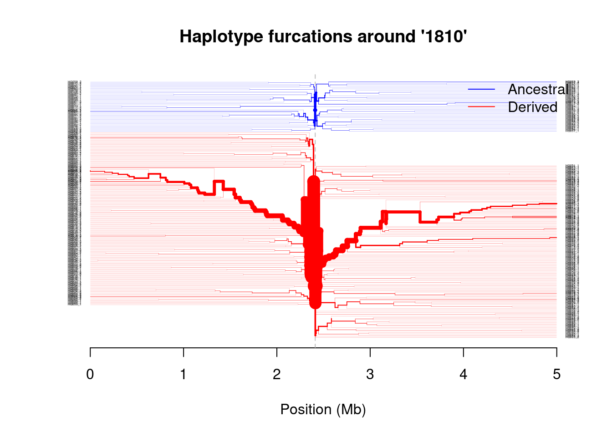
#dev.off()
#Notes and suggestions to go further
Modify the length of simulated sequence as well as the position and selective coefficient of the sweep using the -x and -a parameters in discoal. You can also modify the recombination rate in neutral (but not selected) simulations, or change the demographic history. You can also specify soft sweeps.
Note that the lowest P-value will not necessarily coincide with the actual locus under selection!
Note that rehh first examines haplotype length in each population and outputs haplotype extension statistics. These can also be used to detect possible signatures of selective sweeps within populations.
Note also that if you want to learn more about rehh, there is an excellent vignette with many examples:
https://cran.r-project.org/web/packages/rehh/vignettes/rehh.html
Genome-wide scan of association
This part of the workshop deals with a small freshwater crustacean, Daphnia magna. The related paper (Ameline et al. 2021) should also be in the References folder.
You will often encounter fragmented genomes, even with the advent of long-read sequencing.
A simple genome-wide association test (chi-square test). Epistasis in Daphnia magna
We will try to identify loci associated with D. magna’s resistance to different strains of the parasite Pasteuria ramosa. For each of the four strains, we looked at whether the host was resistant (R) or susceptible (S). This leads to a phenotype consisting of a series of four S and R letters, such as SSRR or RRRR. You can look at the Excel file found with the data to get an idea of the different combinations we have.
We used vcftools to obtain a PLINK input file (similar to what we did when running ADMIXTURE during Day 2). You will find the phenotype file as a text file named all_phenotype.txt. For the first analysis, we will contrast individuals that are susceptible to all strains with the others. We can run a simple association test in PLINK1.9 like this:
conda activate Workshop_TL_YB
cd Daphnia_data
plink --noweb --file association_all --assoc --pheno-name SSSS_vs_others --pheno all_phenotype.txt --out SSSS_vs_others --allow-extra-chr --allow-no-sexWe can now import the association results into R. Let’s make a simple Manhattan plot with our two scaffolds.
library(qqman)For example usage please run: vignette('qqman')Citation appreciated but not required:Turner, (2018). qqman: an R package for visualizing GWAS results using Q-Q and manhattan plots. Journal of Open Source Software, 3(25), 731, https://doi.org/10.21105/joss.00731.library(data.table)
Attaching package: 'data.table'The following objects are masked from 'package:reshape2':
dcast, meltlibrary(fastman)
Attaching package: 'fastman'The following objects are masked from 'package:gap':
hg18, hg19forGWAS=as.data.frame(fread("Daphnia_data/SSSS_vs_others.assoc"))
hist(forGWAS$P,main="",xlab="P-value") ###How does it look?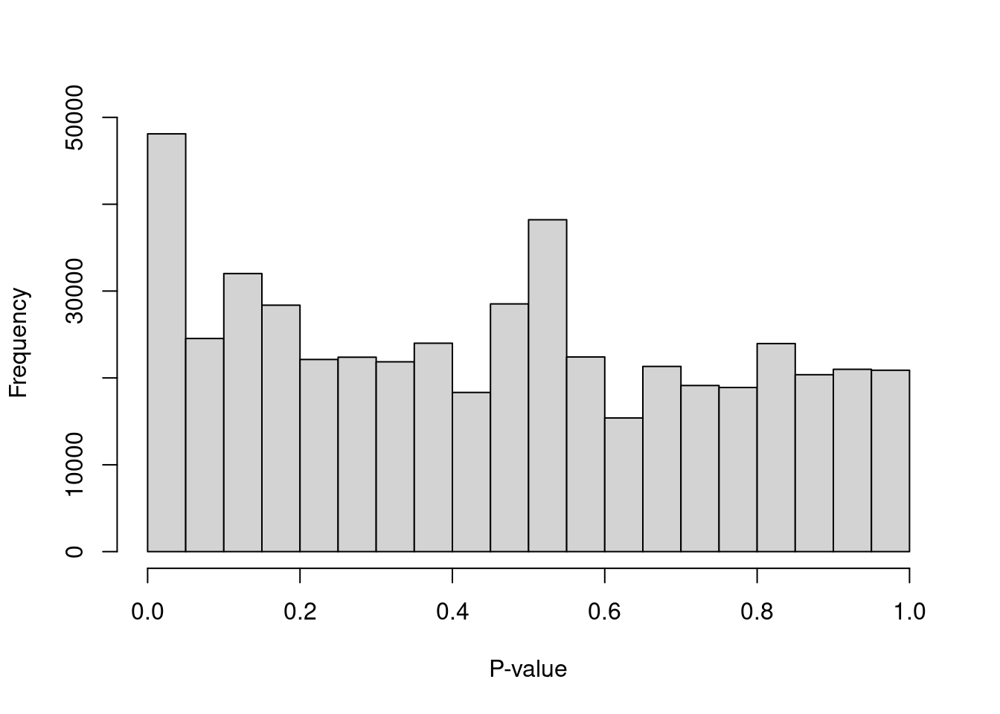
forGWAS$position <- as.numeric(sub(".*:(\\d+)", "\\1", forGWAS$SNP))
par(mfrow=c(1,3))
scaffold=subset(forGWAS,forGWAS$CHR=="scaffold00944")
plot(scaffold$position,-log10(scaffold$P),xlab="Position", ylab="-log10(P)", main="scaffold00944",ylim=c(0,12))
scaffold=subset(forGWAS,forGWAS$CHR=="scaffold00512")
plot(scaffold$position,-log10(scaffold$P),xlab="Position", ylab="-log10(P)", main="scaffold00512",ylim=c(0,12))
scaffold=subset(forGWAS,forGWAS$CHR=="scaffold02167")
plot(scaffold$position,-log10(scaffold$P),xlab="Position", ylab="-log10(P)", main="scaffold02167",ylim=c(0,12))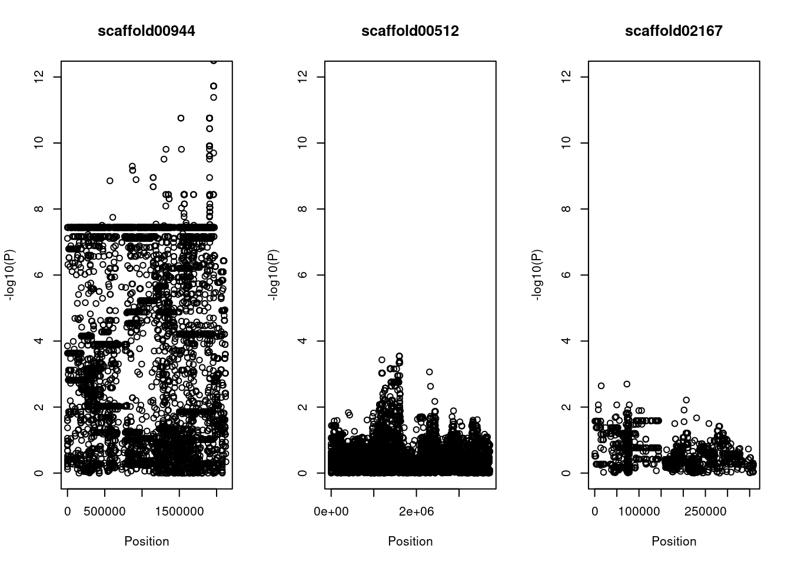
par(mfrow=c(1,1))Now, let’s examine the Q-Q plot of our p-values. What do we notice?
library(qqman)
library(data.table)
library(fastman)
fastqq(forGWAS$P, logtransform=TRUE, speedup=TRUE, lambda=TRUE, maxP=14,
fix_zero=TRUE, cex=0.6, cex.axis=0.9)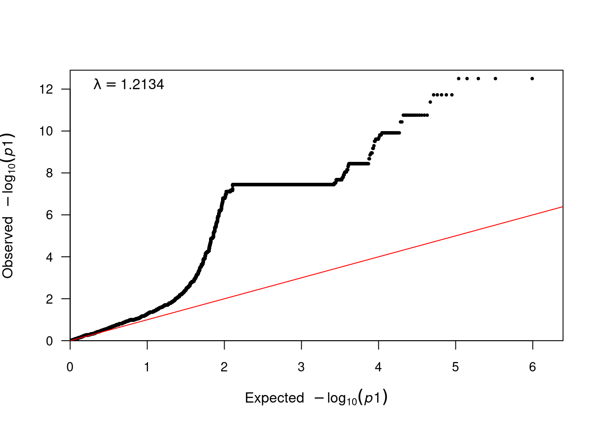
[1] 1.213365##
lambda=median(forGWAS$CHISQ,na.rm = T)/qchisq(0.5,1) ##We divide by the expected median of the chi2 distribution with 1df.
##
forGWAS$P_corrected=pchisq(forGWAS$CHISQ/lambda, 1, lower.tail = F)
#manhattan(forGWAS, chr="CHR", bp="Position", snp="Position", p="P_corrected" )
##
par(mfrow=c(1,3))
scaffold=subset(forGWAS,forGWAS$CHR=="scaffold00944")
plot(scaffold$position,-log10(scaffold$P_corrected), xlab="Position", ylab="-log10(P, corrected)", main="scaffold00944",ylim=c(0,12))
scaffold=subset(forGWAS,forGWAS$CHR=="scaffold00512")
plot(scaffold$position,-log10(scaffold$P_corrected), xlab="Position", ylab="-log10(P, corrected)", main="scaffold00512",ylim=c(0,12))
scaffold=subset(forGWAS,forGWAS$CHR=="scaffold02167")
plot(scaffold$position,-log10(scaffold$P_corrected), xlab="Position", ylab="-log10(P, corrected)", main="scaffold02167",ylim=c(0,12))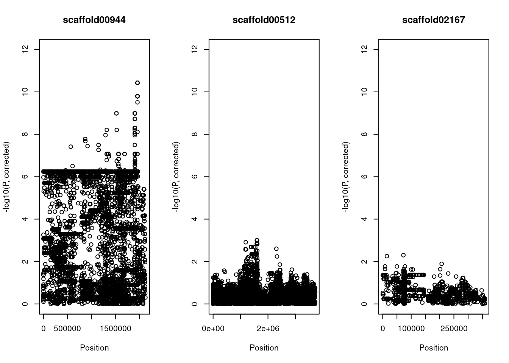
par(mfrow=c(1,1))We observe some inflation, but also note that there is a LOT of outlier loci. We will correct this inflation by correcting the P-values by lambda, the inflation factor. This is also called genomic control.
Repeat this analysis but this time have a look at xxxS_vs_xxxR and RRxR_vs_SSSS phenotypes. Look in particular at scaffold02167. What do you notice?
Try to come up with a model that explains how these loci and alleles interact to shape the resistance phenotype. You can of course have a look at the paper in the References folder.
Genome-wide scan for association: fruit colour in Phoenix dactylifera
What we did before was relatively simple: comparing discrete phenotypes and running a fairly basic association test. For more complex cases, you can of course use PLINK. However, there is a rather powerful alternative to run different association models in an integrated way, GAPIT: https://github.com/jiabowang/GAPIT. The only slightly difficult part is that it requires a HapMap file as an input, instead of a VCF. Given our limited time, we start directly from the HapMap file. The script will take about 5 minutes to run on the whole genome dataset.
source("http://zzlab.net/GAPIT/gapit_functions.txt")
myY<-read.table("./DP_Data/Phenotypes1.txt",h=T)
myY_traits <- myY[,c(1,19)] ##for RAB, the statistic describing the colour of the fruit
#myY_traits <- myY[,c(1,30)] ##for Sex
myG<-read.table("./DP_Data/final_gwas.snp1.8c.1.hmp.txt",h=F)
myGAPIT <- GAPIT(
Y=myY_traits,
PCA.total=5,
G=myG,
model="GLM",
cutOff = 0.05)If you want to have a look at the genomic context, you can browse the genome used in this study here:
https://www.ncbi.nlm.nih.gov/gdv/browser/genome/?id=GCF_009389715.1
Time-permitting, try to find the sex-determining region. The column for sex is named SEX in the phenotype dataframe named myY_traits.
References
Ameline, Camille, Yann Bourgeois, Felix Vögtli, Eevi Savola, Jason Andras, Jan Engelstädter, and Dieter Ebert. 2021. “A Two-Locus System with Strong Epistasis Underlies Rapid Parasite-Mediated Evolution of Host Resistance.” Molecular Biology and Evolution 38 (4): 1512–28.
Bhatia, Gaurav, Nick Patterson, Sriram Sankararaman, and Alkes L. Price. 2013. “Estimating and Interpreting F ST : The Impact of Rare Variants.” Genome Research 23 (9): 1514–21. https://doi.org/10.1101/gr.154831.113.
Browning, Sharon R., and Brian L. Browning. 2007. “Rapid and Accurate Haplotype Phasing and Missing-Data Inference for Whole-Genome Association Studies by Use of Localized Haplotype Clustering.” The American Journal of Human Genetics 81 (5): 1084–97. https://doi.org/10.1086/521987.
Delaneau, Olivier, Jean François Zagury, Matthew R. Robinson, Jonathan L. Marchini, and Emmanouil T. Dermitzakis. 2019. “Accurate, Scalable and Integrative Haplotype Estimation.” Nature Communications 10 (1): 24–29. https://doi.org/10.1038/s41467-019-13225-y.
Excoffier, Laurent, Isabelle Dupanloup, Emilia Huerta-Sanchez, Vitor C. Sousa, and Matthieu Foll. 2013. “Robust Demographic Inference from Genomic and SNP Data.” PLoS Genetics 9 (10). https://doi.org/10.1371/journal.pgen.1003905.
Gutenkunst, Ryan N., Ryan D. Hernandez, Scott H. Williamson, and Carlos D. Bustamante. 2009. “Inferring the Joint Demographic History of Multiple Populations from Multidimensional SNP Frequency Data.” PLoS Genetics 5 (10). https://doi.org/10.1371/journal.pgen.1000695.
Hudson, Richard R. 2002. “Generating Samples Under a Wrightfisher Neutral Model of Genetic Variation.” Bioinformatics 18 (2): 337–38. https://doi.org/10.1093/bioinformatics/18.2.337.
Kern, Andrew D., and Daniel R. Schrider. 2016. “Discoal: Flexible Coalescent Simulations with Selection.” Bioinformatics 32 (24): 3839–41.
Korneliussen, Thorfinn Sand, Anders Albrechtsen, and Rasmus Nielsen. 2014. “ANGSD: Analysis of Next Generation Sequencing Data.” BMC Bioinformatics 15 (1): 356. https://doi.org/10.1186/s12859-014-0356-4.